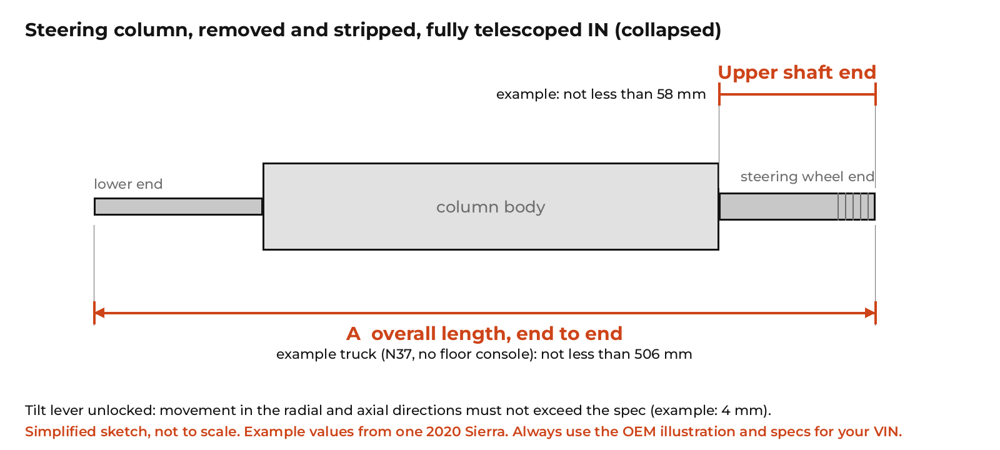

Absolute ADAS · Technician runbook
Steering column inspection after a collision
Example numbers only. Every spec on this page comes from one 2020 GMC Sierra walkthrough. Never reuse them. Pull the procedure and specs from OEM service information for the VIN you are working on.
What this is: after a collision, the manufacturer lists which parts must be inspected or replaced. On GM vehicles the steering column is on that list once damage goes beyond cosmetic. The column is built to collapse in a crash, so it can be damaged with nothing visible. The inspection means removing it and measuring it.
What decides whether it's required
| Question | Where the answer comes from |
|---|---|
| How severe was the collision? (cosmetic only / beyond cosmetic without airbag deployment / airbags deployed) | The damage on the vehicle, matched to the OEM chart |
| How was this exact vehicle built? | VIN and RPO option codes on the build sheet |
1Look it up by VIN
- Enter the VIN in ALLDATA (or GM service information).
- Go to Body and Frame → Repairs and Inspections Required After a Collision.
- If ALLDATA is missing something you expect, check GM service information directly.
2Match the damage to the chart
- Find the column of the chart that matches the collision severity.
- "Exceeds minor outer body panel cosmetic distortion" means more than dents and scratches: a bent bracket, frame rail or support.
- Note every item listed to inspect or replace (steering wheel airbag, steering wheel, steering column, impact sensors and more).
- "Inspect steering column" points to the steering column accident damage inspection procedure. Open it.
3Find the RPO codes
- Read which questions the procedure asks. Example truck: front floor console or not, and RPO N33 or N37.
- Pull the build sheet by VIN (one free option: repairlinkshop.com).
- Ctrl+F for each code. Record which one the vehicle has:
- Select the matching version of the procedure.
| Example: why the code matters | Overall length minimum |
|---|---|
| N37 column (tilt and telescoping), no floor console | 506 mm |
| N33 column | 530 mm |
24 mm apart. With the wrong code, a damaged column can pass or a good one can fail.
4Remove and strip the column
- Follow the OEM removal procedure, including the airbag safety steps.
- Strip it down to the bare column so the end-to-end measurement is accurate.
- Set the column fully telescoped in (collapsed).
5Measure

| Check | Spec for this VIN | Measured | Example truck |
|---|---|---|---|
| Upper shaft end (where the steering wheel bolts on) | not less than 58 mm | ||
| Overall length, end to end (A) | not less than 506 mm | ||
| Movement, radial and axial, tilt lever unlocked | not more than 4 mm |
- Use the OEM illustration for the exact measuring points.
- Measure in millimeters with a tram gauge or digital tape.
- Photo of each measurement with the tape visible.
6Pass or fail
- Any measurement out of spec: the column is damaged. Discard it and install a new one.
- All in spec: reinstall per the OEM procedure.
- Not sure where to measure or how to read the spec? Stop and ask Mark.
7Document
- OEM procedure pages for this VIN saved to the job file.
- Build sheet showing the RPO code saved.
- Measurements, photos and pass/fail recorded.
- Filed with the pre-scan and post-scan reports.